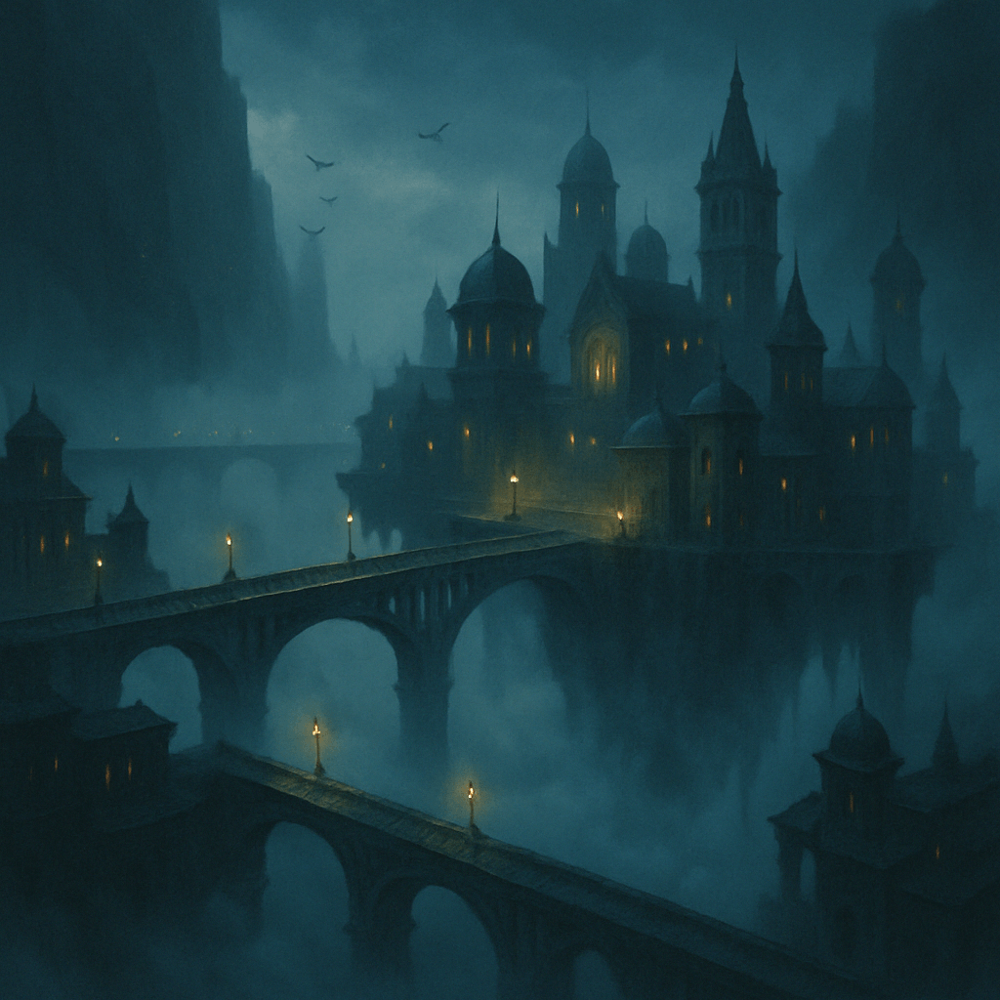
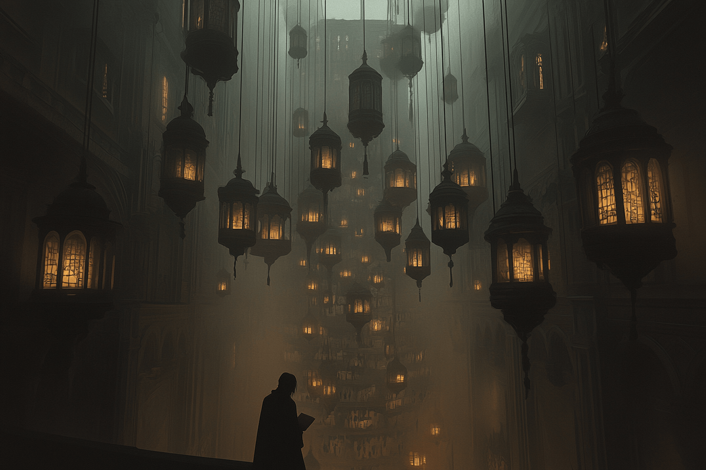
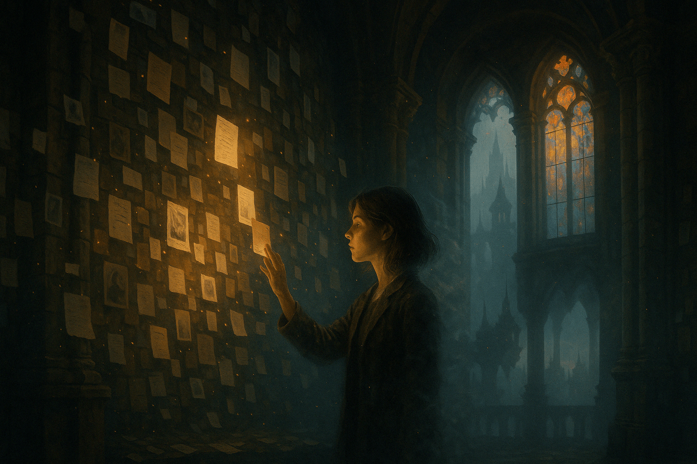

Donde las calles flotan… y los pasos no dejan huella.
Relato de exploración
Nadie supo jamás cómo llegaron los primeros. Se dice que la ciudad solo aparece cuando se está a punto de olvidar algo importante. Esta vez, se manifestó entre dos riscos sin nombre, suspendida en el aire como una telaraña de puentes antiguos flotando sobre la
niebla. Cuando Leire abrió los ojos, estaba de pie sobre uno de esos puentes. El viento no soplaba. La neblina no se movía. Y sin embargo, las farolas se encendían una a una a medida que avanzaba.
El silencio era total. Hasta que no lo fue.
Una melodía sin origen flotaba en el aire. No provenía de ningún lugar en particular, pero parecía reconocible. Como una canción de infancia de la que ya no se sabe la letra. Leire se aferró a la barandilla —una estructura tallada en piedra blanca que parecía tener
siglos—, y miró hacia abajo. No había suelo. Solo un vacío opaco, lleno de ecos olvidados.
Al llegar a una de las torres centrales, la encontró abierta. Dentro, paredes cubiertas de notas escritas a mano. Recuerdos sueltos. Cartas sin remitente. Nombres. Fechas. Fragmentos de promesas rotas. Tocó una de las hojas. De pronto, olvidó su segundo apellido.
Luego, el rostro de su maestra de primaria. Luego, la voz de alguien que no sabía si fue amor o espejismo.
Corrió, o creyó hacerlo. La ciudad no obedecía a la lógica del movimiento. Los puentes aparecían y desaparecían. Una puerta que antes conducía a una torre ahora daba a una terraza sin barandilla. Vio su reflejo en una vidriera rota, pero tenía otra expresión, otra
edad, otro nombre.
Llegó a una última plataforma, donde un cuaderno abierto le esperaba. Leire escribió sin pensar. Su letra, desconocida. Su historia, no del todo suya. Al cerrar el cuaderno, la ciudad comenzó a desvanecerse. O tal vez fue ella quien empezó a desvanecerse primero.
Despertó en su cama. Sobre la almohada, un papel arrugado con una frase escrita: “Nos volveremos a encontrar… si lo olvidas”.
Informe de Estado
- Accesibilidad: Inestable. Solo aparece entre acantilados no registrados en mapas. Suele manifestarse en momentos de profunda pérdida o vacío existencial.
- Recomendación de la Sociedad: Evitar tocar inscripciones o documentos. No mirar reflejos durante más de cinco segundos. No escribir nada.
- Estado del archivo: Fuertemente volátil. Los registros se desvanecen con el tiempo o se transforman en otros relatos. Se recomienda lectura cruzada entre expedientes.
Informe clasificado — X-022A. Registrado el 14 de abril de 2025.
Registro Visual
Algunas imágenes han sido rescatadas de antiguos dispositivos, otras fueron dibujadas de
memoria por quienes lograron regresar. Todas ellas capturan instantes que el tiempo quiso enterrar.



Fragmentos Recuperados
Sombras suspendidas entre puentes que no llevan a ningún lugar. Ecos de pasos que nunca dejaron huella. Aquí flotan los últimos pensamientos de quienes cruzaron sus brumas... y perdieron el recuerdo de haber estado allí.
“Escribí mi nombre en la niebla. Al volverme, la niebla me llamó por otro.”
— Viajero Desfasado, informe borrado
“Pensé que era un sueño. Pero aún tengo esa cicatriz donde nunca me herí.”
— Testigo C-47, bitácora mental
“Vi mis propios recuerdos escritos en las paredes… con una letra que nunca aprendí.”
— Sombra Espectral, sala de archivos
“Me encontré en un lugar que solo había visitado en un recuerdo ajeno.”
— Agente Errante, expediente cruzado
“Desperté con el sabor de una canción que nadie ha compuesto.”
— Exploradora Límite, registro auditivo
“Escribí mi nombre en la niebla. Al volverme, la niebla me llamó por otro.”